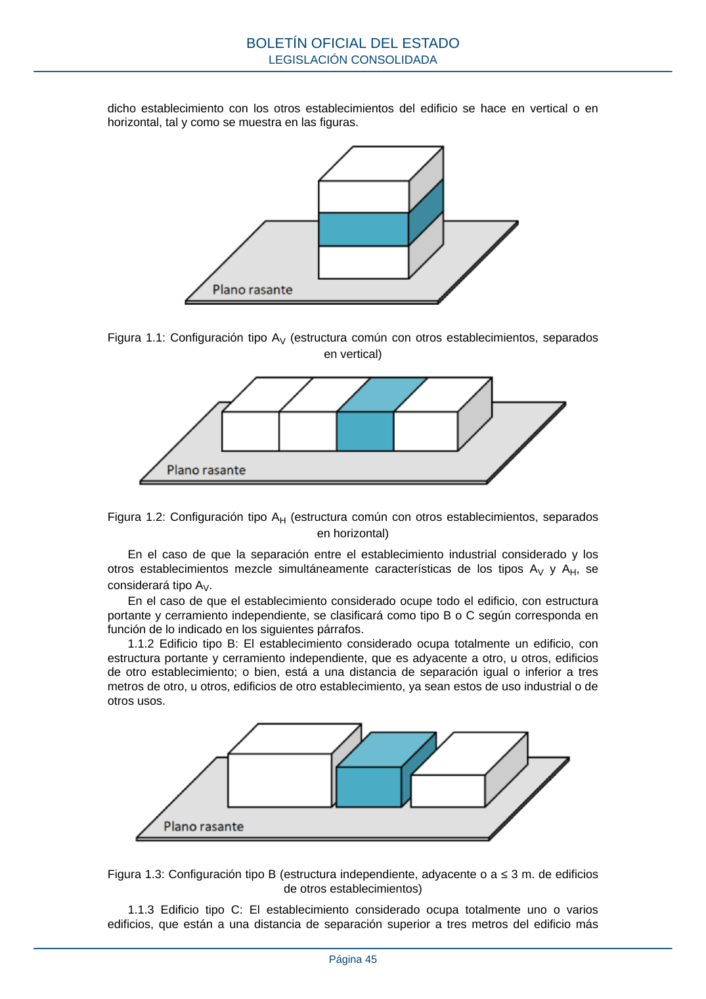
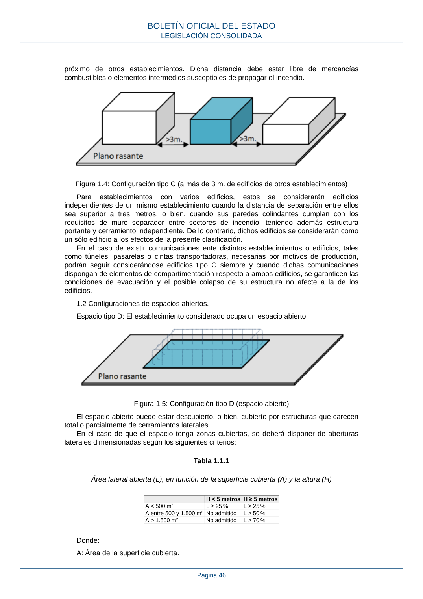
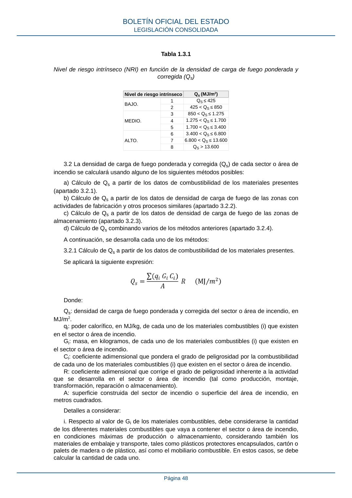
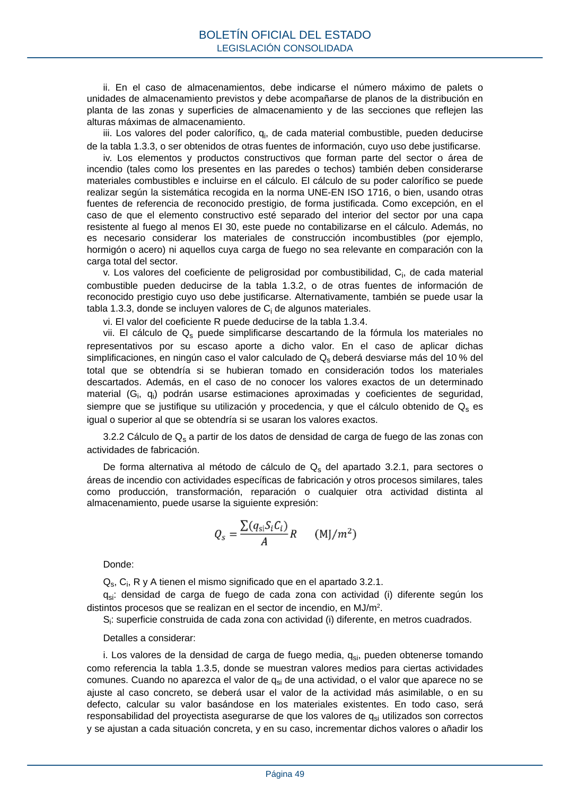
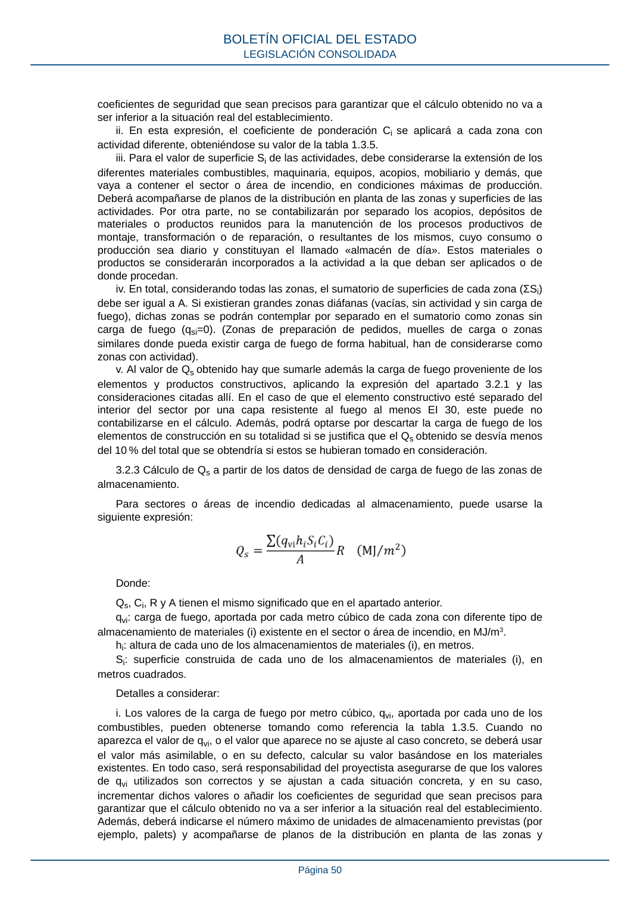
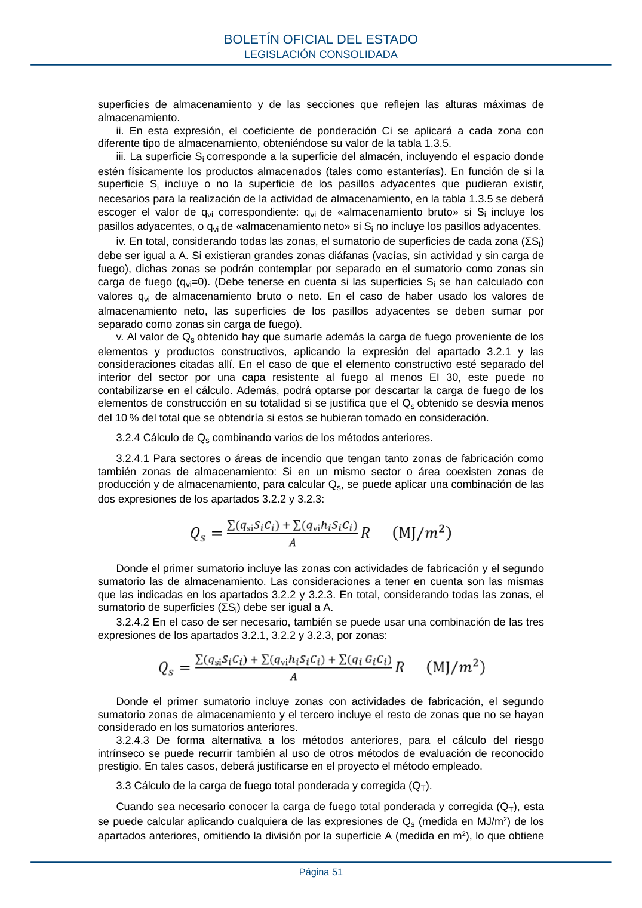

RSCIEI · ANEXO I · versión 2025-04-10 · capa asociada
Formatos: JSON compacto · Markdown · PDF fuente
Ámbito del documento · texto del ámbito · documento y tablas
ID técnico a0108 · PDF pág. 44-51 · jerarquía no validada por persona · contrastado con el literal de la página 44 (candidato tipográfico); no validado por persona · padre: raíz
ANEXO I Caracterización de los establecimientos industriales El presente anexo detalla la forma de caracterizar los establecimientos industriales en relación con la seguridad en caso de incendio. Para ello, primeramente, se deberán clasificar los edificios y espacios abiertos que forman el establecimiento según su configuración. Posteriormente se deberán identificar los sectores de incendio (en edificios) y áreas de incendio (en espacios abiertos) y, por último, se deberá calcular el nivel de riesgo intrínseco de cada sector y área. Los requisitos definidos en los anexos II y III del presente reglamento se determinarán para cada sector o área de incendio en función de la configuración a la que pertenezcan, de su nivel de riesgo intrínseco y de su superficie. 1. Clasificación de los edificios y espacios abiertos según su configuración. Los establecimientos industriales pueden estar formados por un conjunto de uno o varios edificios, partes de los mismos y espacios abiertos. Estos se clasificarán en función de su configuración teniendo en cuenta factores relativos a su situación, ubicación y entorno. De esta forma cada edificio y cada espacio abierto pertenecerá a uno de los siguientes tipos de configuración: 1.1 Configuraciones de edificios. 1.1.1 Edificio tipo A: El establecimiento considerado ocupa parcialmente un edificio que tiene, además, otros establecimientos, ya sean estos de uso industrial o de otros usos. Dentro de la configuración tipo A, en función de la parte del edificio que esté ocupada por el establecimiento considerado, se diferenciará entre tipo AV o AH, según si la separación de BOLETÍN OFICIAL DEL ESTADO LEGISLACIÓN CONSOLIDADA Página 44 dicho establecimiento con los otros establecimientos del edificio se hace en vertical o en horizontal, tal y como se muestra en las figuras. Figura 1.1: Configuración tipo AV (estructura común con otros establecimientos, separados en vertical) Figura 1.2: Configuración tipo AH (estructura común con otros establecimientos, separados en horizontal) En el caso de que la separación entre el establecimiento industrial considerado y los otros establecimientos mezcle simultáneamente características de los tipos AV y AH, se considerará tipo AV. En el caso de que el establecimiento considerado ocupe todo el edificio, con estructura portante y cerramiento independiente, se clasificará como tipo B o C según corresponda en función de lo indicado en los siguientes párrafos. 1.1.2 Edificio tipo B: El establecimiento considerado ocupa totalmente un edificio, con estructura portante y cerramiento independiente, que es adyacente a otro, u otros, edificios de otro establecimiento; o bien, está a una distancia de separación igual o inferior a tres metros de otro, u otros, edificios de otro establecimiento, ya sean estos de uso industrial o de otros usos. Figura 1.3: Configuración tipo B (estructura independiente, adyacente o a ≤ 3 m. de edificios de otros establecimientos) 1.1.3 Edificio tipo C: El establecimiento considerado ocupa totalmente uno o varios edificios, que están a una distancia de separación superior a tres metros del edificio más BOLETÍN OFICIAL DEL ESTADO LEGISLACIÓN CONSOLIDADA Página 45 próximo de otros establecimientos. Dicha distancia debe estar libre de mercancías combustibles o elementos intermedios susceptibles de propagar el incendio. Figura 1.4: Configuración tipo C (a más de 3 m. de edificios de otros establecimientos) Para establecimientos con varios edificios, estos se considerarán edificios independientes de un mismo establecimiento cuando la distancia de separación entre ellos sea superior a tres metros, o bien, cuando sus paredes colindantes cumplan con los requisitos de muro separador entre sectores de incendio, teniendo además estructura portante y cerramiento independiente. De lo contrario, dichos edificios se considerarán como un sólo edificio a los efectos de la presente clasificación. En el caso de existir comunicaciones ente distintos establecimientos o edificios, tales como túneles, pasarelas o cintas transportadoras, necesarias por motivos de producción, podrán seguir considerándose edificios tipo C siempre y cuando dichas comunicaciones dispongan de elementos de compartimentación respecto a ambos edificios, se garanticen las condiciones de evacuación y el posible colapso de su estructura no afecte a la de los edificios. 1.2 Configuraciones de espacios abiertos. Espacio tipo D: El establecimiento considerado ocupa un espacio abierto. Figura 1.5: Configuración tipo D (espacio abierto) El espacio abierto puede estar descubierto, o bien, cubierto por estructuras que carecen total o parcialmente de cerramientos laterales. En el caso de que el espacio tenga zonas cubiertas, se deberá disponer de aberturas laterales dimensionadas según los siguientes criterios: Tabla 1.1.1 Área lateral abierta (L), en función de la superficie cubierta (A) y la altura (H) H < 5 metrosH ≥ 5 metros A < 500 m2 L ≥ 25 % L ≥ 25 % A entre 500 y 1.500 m2No admitido L ≥ 50 % A > 1.500 m2 No admitido L ≥ 70 % Donde: A: Área de la superficie cubierta. BOLETÍN OFICIAL DEL ESTADO LEGISLACIÓN CONSOLIDADA Página 46 H: Altura interior desde el suelo hasta la cubrición. L: Área lateral permanentemente abierta al exterior (huecos) de la envolvente perimetral. Se expresa en porcentaje respecto al área lateral total (paredes cerradas + huecos). El área lateral abierta indicada debe estar distribuida de tal forma que se permita la rápida disipación del calor y humo. Cuando no se cumpla con los requisitos de la tabla, la zona cubierta se debe considerar como configuración tipo A, B o C, según corresponda. Los espacios tipo D pueden tener algunas zonas puntuales cerradas, tales como aseos o vestuarios, siempre que no alberguen la actividad principal del establecimiento y que no aumenten el riesgo de incendio. 1.3 Otras consideraciones. Cuando un edificio o espacio abierto no coincida exactamente con alguno de los tipos de configuraciones definidos en los apartados 1.1 y 1.2, se considerará que pertenece al tipo con que mejor se pueda equiparar o asimilar justificadamente. Cuando un establecimiento esté formado por varios edificios, partes de edificios o espacios abiertos con configuraciones diferentes, cada uno se deberá clasificar por separado con respecto a otros establecimientos, y los requisitos de los anexos II, III y IV del reglamento se aplicarán a cada uno de ellos según dicha clasificación. 2. Identificación de los sectores y áreas de incendio. 2.1 Los edificios, partes de edificios y espacios abiertos que forman los establecimientos industriales se pueden dividir en una o varias zonas, las cuales constituirán sectores de incendio o áreas de incendio, según los siguientes criterios: a) Sector de incendio: Zona de un edificio en el interior de la cual se puede confinar (o excluir) el incendio durante un periodo de tiempo determinado, para que este no se pueda propagar a (o desde) otros sectores o áreas de incendio, ya sea mediante elementos constructivos delimitadores resistentes al fuego o por medio de espacios perimetrales al edificio. b) Área de incendio: Espacio abierto separado de otras zonas y definido por su perímetro. La disposición de los elementos en las áreas de incendio deberá ser tal que se limite la propagación del incendio a (o desde) edificios u otras áreas de incendio colindantes, ya sea mediante elementos resistentes al fuego o por medio de espacios perimetrales. 2.2 A la hora de planificar cómo va a sectorizarse un establecimiento se debe tener en cuenta la naturaleza de las actividades que se vayan a realizar en él, sus riesgos inherentes, así como el resto de factores que puedan influir en la seguridad. En respuesta a todo ello, se podrá optar por establecer un único sector (o área) de incendio, o separar los procesos y almacenamientos en sectores diferenciados, o sectorizar el establecimiento en función del riesgo de cada actividad, o bien, utilizar otros criterios distintos a los anteriores. Todo ello sin perjuicio de las sectorizaciones mínimas que se puedan exigir en este reglamento o en otra reglamentación especifica. 3. Caracterización de los sectores y áreas de incendio según su nivel de riesgo intrínseco. 3.1 El nivel de riesgo intrínseco (NRI) de un sector o área de incendio refleja cual es el riesgo en este ante un posible incendio, derivado de la cantidad de materiales combustibles presentes, de su facilidad de inflamación, distribución y de la naturaleza de las actividades que se realizan en el lugar. El nivel de riesgo intrínseco será clasificado como bajo, medio o alto, y a su vez, se subclasificará entre los valores de 1 a 8 en función de la densidad de carga de fuego ponderada y corregida (Qs) presente en el sector o área de incendio referido, atendiendo a la tabla 1.3.1. BOLETÍN OFICIAL DEL ESTADO LEGISLACIÓN CONSOLIDADA Página 47 Tabla 1.3.1 Nivel de riesgo intrínseco (NRI) en función de la densidad de carga de fuego ponderada y corregida (Qs) Nivel de riesgo intrínseco Qs (MJ/m2) BAJO. 1 QS ≤ 425 2 425 < QS ≤ 850 MEDIO. 3 850 < QS ≤ 1.275 4 1.275 < QS ≤ 1.700 5 1.700 < QS ≤ 3.400 ALTO. 6 3.400 < QS ≤ 6.800 7 6.800 < QS ≤ 13.600 8 QS > 13.600 3.2 La densidad de carga de fuego ponderada y corregida (Qs) de cada sector o área de incendio se calculará usando alguno de los siguientes métodos posibles: a) Cálculo de Qs a partir de los datos de combustibilidad de los materiales presentes (apartado 3.2.1). b) Cálculo de Qs a partir de los datos de densidad de carga de fuego de las zonas con actividades de fabricación y otros procesos similares (apartado 3.2.2). c) Cálculo de Qs a partir de los datos de densidad de carga de fuego de las zonas de almacenamiento (apartado 3.2.3). d) Cálculo de Qs combinando varios de los métodos anteriores (apartado 3.2.4). A continuación, se desarrolla cada uno de los métodos: 3.2.1 Cálculo de Qs a partir de los datos de combustibilidad de los materiales presentes. Se aplicará la siguiente expresión: Donde: Qs: densidad de carga de fuego ponderada y corregida del sector o área de incendio, en MJ/m2. qi: poder calorífico, en MJ/kg, de cada uno de los materiales combustibles (i) que existen en el sector o área de incendio. Gi: masa, en kilogramos, de cada uno de los materiales combustibles (i) que existen en el sector o área de incendio. Ci: coeficiente adimensional que pondera el grado de peligrosidad por la combustibilidad de cada uno de los materiales combustibles (i) que existen en el sector o área de incendio. R: coeficiente adimensional que corrige el grado de peligrosidad inherente a la actividad que se desarrolla en el sector o área de incendio (tal como producción, montaje, transformación, reparación o almacenamiento). A: superficie construida del sector de incendio o superficie del área de incendio, en metros cuadrados. Detalles a considerar: i. Respecto al valor de Gi de los materiales combustibles, debe considerarse la cantidad de los diferentes materiales combustibles que vaya a contener el sector o área de incendio, en condiciones máximas de producción o almacenamiento, considerando también los materiales de embalaje y transporte, tales como plásticos protectores encapsulados, cartón o palets de madera o de plástico, así como el mobiliario combustible. En estos casos, se debe calcular la cantidad de cada uno. BOLETÍN OFICIAL DEL ESTADO LEGISLACIÓN CONSOLIDADA Página 48 ii. En el caso de almacenamientos, debe indicarse el número máximo de palets o unidades de almacenamiento previstos y debe acompañarse de planos de la distribución en planta de las zonas y superficies de almacenamiento y de las secciones que reflejen las alturas máximas de almacenamiento. iii. Los valores del poder calorífico, qi, de cada material combustible, pueden deducirse de la tabla 1.3.3, o ser obtenidos de otras fuentes de información, cuyo uso debe justificarse. iv. Los elementos y productos constructivos que forman parte del sector o área de incendio (tales como los presentes en las paredes o techos) también deben considerarse materiales combustibles e incluirse en el cálculo. El cálculo de su poder calorífico se puede realizar según la sistemática recogida en la norma UNE-EN ISO 1716, o bien, usando otras fuentes de referencia de reconocido prestigio, de forma justificada. Como excepción, en el caso de que el elemento constructivo esté separado del interior del sector por una capa resistente al fuego al menos EI 30, este puede no contabilizarse en el cálculo. Además, no es necesario considerar los materiales de construcción incombustibles (por ejemplo, hormigón o acero) ni aquellos cuya carga de fuego no sea relevante en comparación con la carga total del sector. v. Los valores del coeficiente de peligrosidad por combustibilidad, Ci, de cada material combustible pueden deducirse de la tabla 1.3.2, o de otras fuentes de información de reconocido prestigio cuyo uso debe justificarse. Alternativamente, también se puede usar la tabla 1.3.3, donde se incluyen valores de Ci de algunos materiales. vi. El valor del coeficiente R puede deducirse de la tabla 1.3.4. vii. El cálculo de Qs puede simplificarse descartando de la fórmula los materiales no representativos por su escaso aporte a dicho valor. En el caso de aplicar dichas simplificaciones, en ningún caso el valor calculado de Qs deberá desviarse más del 10 % del total que se obtendría si se hubieran tomado en consideración todos los materiales descartados. Además, en el caso de no conocer los valores exactos de un determinado material (Gi, qi) podrán usarse estimaciones aproximadas y coeficientes de seguridad, siempre que se justifique su utilización y procedencia, y que el cálculo obtenido de Qs es igual o superior al que se obtendría si se usaran los valores exactos. 3.2.2 Cálculo de Qs a partir de los datos de densidad de carga de fuego de las zonas con actividades de fabricación. De forma alternativa al método de cálculo de Qs del apartado 3.2.1, para sectores o áreas de incendio con actividades específicas de fabricación y otros procesos similares, tales como producción, transformación, reparación o cualquier otra actividad distinta al almacenamiento, puede usarse la siguiente expresión: Donde: Qs, Ci, R y A tienen el mismo significado que en el apartado 3.2.1. qsi: densidad de carga de fuego de cada zona con actividad (i) diferente según los distintos procesos que se realizan en el sector de incendio, en MJ/m2. Si: superficie construida de cada zona con actividad (i) diferente, en metros cuadrados. Detalles a considerar: i. Los valores de la densidad de carga de fuego media, qsi, pueden obtenerse tomando como referencia la tabla 1.3.5, donde se muestran valores medios para ciertas actividades comunes. Cuando no aparezca el valor de qsi de una actividad, o el valor que aparece no se ajuste al caso concreto, se deberá usar el valor de la actividad más asimilable, o en su defecto, calcular su valor basándose en los materiales existentes. En todo caso, será responsabilidad del proyectista asegurarse de que los valores de qsi utilizados son correctos y se ajustan a cada situación concreta, y en su caso, incrementar dichos valores o añadir los BOLETÍN OFICIAL DEL ESTADO LEGISLACIÓN CONSOLIDADA Página 49 coeficientes de seguridad que sean precisos para garantizar que el cálculo obtenido no va a ser inferior a la situación real del establecimiento. ii. En esta expresión, el coeficiente de ponderación Ci se aplicará a cadazona con actividad diferente, obteniéndose su valor de la tabla 1.3.5. iii. Para el valor de superficie Si de las actividades, debe considerarse la extensión de los diferentes materiales combustibles, maquinaria, equipos, acopios, mobiliario y demás, que vaya a contener el sector o área de incendio, en condiciones máximas de producción. Deberá acompañarse de planos de la distribución en planta de las zonas y superficies de las actividades. Por otra parte, no se contabilizarán por separado los acopios, depósitos de materiales o productos reunidos para la manutención de los procesos productivos de montaje, transformación o de reparación, o resultantes de los mismos, cuyo consumo o producción sea diario y constituyan el llamado «almacén de día». Estos materiales o productos se considerarán incorporados a la actividad a la que deban ser aplicados o de donde procedan. iv. En total, considerando todas las zonas, el sumatorio de superficies de cada zona (ΣSi) debe ser igual a A. Si existieran grandes zonas diáfanas (vacías, sin actividad y sin carga de fuego), dichas zonas se podrán contemplar por separado en el sumatorio como zonas sin carga de fuego (qsi=0). (Zonas de preparación de pedidos, muelles de carga o zonas similares donde pueda existir carga de fuego de forma habitual, han de considerarse como zonas con actividad). v. Al valor de Qs obtenido hay que sumarle además la carga de fuego proveniente de los elementos y productos constructivos, aplicando la expresión del apartado 3.2.1 y las consideraciones citadas allí. En el caso de que el elemento constructivo esté separado del interior del sector por una capa resistente al fuego al menos EI 30, este puede no contabilizarse en el cálculo. Además, podrá optarse por descartar la carga de fuego de los elementos de construcción en su totalidad si se justifica que el Qs obtenido se desvía menos del 10 % del total que se obtendría si estos se hubieran tomado en consideración. 3.2.3 Cálculo de Qs a partir de los datos de densidad de carga de fuego de las zonas de almacenamiento. Para sectores o áreas de incendio dedicadas al almacenamiento, puede usarse la siguiente expresión: Donde: Qs, Ci, R y A tienen el mismo significado que en el apartado anterior. qvi: carga de fuego, aportada por cada metro cúbico de cada zona con diferente tipo de almacenamiento de materiales (i) existente en el sector o área de incendio, en MJ/m3. hi: altura de cada uno de los almacenamientos de materiales (i), en metros. Si: superficie construida de cada uno de los almacenamientos de materiales (i), en metros cuadrados. Detalles a considerar: i. Los valores de la carga de fuego por metro cúbico, qvi, aportada por cada uno de los combustibles, pueden obtenerse tomando como referencia la tabla 1.3.5. Cuando no aparezca el valor de qvi, o el valor que aparece no se ajuste al caso concreto, se deberá usar el valor más asimilable, o en su defecto, calcular su valor basándose en los materiales existentes. En todo caso, será responsabilidad del proyectista asegurarse de que los valores de qvi utilizados son correctos y se ajustan a cada situación concreta, y en su caso, incrementar dichos valores o añadir los coeficientes de seguridad que sean precisos para garantizar que el cálculo obtenido no va a ser inferior a la situación real del establecimiento. Además, deberá indicarse el número máximo de unidades de almacenamiento previstas (por ejemplo, palets) y acompañarse de planos de la distribución en planta de las zonas y BOLETÍN OFICIAL DEL ESTADO LEGISLACIÓN CONSOLIDADA Página 50 superficies de almacenamiento y de las secciones que reflejen las alturas máximas de almacenamiento. ii. En esta expresión, el coeficiente de ponderación Ci se aplicará a cada zona con diferente tipo de almacenamiento, obteniéndose su valor de la tabla 1.3.5. iii. La superficie Si corresponde a la superficie del almacén, incluyendo el espacio donde estén físicamente los productos almacenados (tales como estanterías). En función de si la superficie Si incluye o no la superficie de los pasillos adyacentes que pudieran existir, necesarios para la realización de la actividad de almacenamiento, en la tabla 1.3.5 se deberá escoger el valor de qvi correspondiente: qvi de «almacenamiento bruto» si Si incluye los pasillos adyacentes, o qvi de «almacenamientoneto» si Si no incluye los pasillos adyacentes. iv. En total, considerando todas las zonas, el sumatorio de superficies de cada zona (ΣSi) debe ser igual a A. Si existieran grandes zonas diáfanas (vacías, sin actividad y sin carga de fuego), dichas zonas se podrán contemplar por separado en el sumatorio como zonas sin carga de fuego (qvi=0). (Debe tenerse en cuenta si las superficies Si se han calculado con valores qvi de almacenamiento bruto o neto. En el caso de haber usado los valores de almacenamiento neto, las superficies de los pasillos adyacentes se deben sumar por separado como zonas sin carga de fuego). v. Al valor de Qs obtenido hay que sumarle además la carga de fuego proveniente de los elementos y productos constructivos, aplicando la expresión del apartado 3.2.1 y las consideraciones citadas allí. En el caso de que el elemento constructivo esté separado del interior del sector por una capa resistente al fuego al menos EI 30, este puede no contabilizarse en el cálculo. Además, podrá optarse por descartar la carga de fuego de los elementos de construcción en su totalidad si se justifica que el Qs obtenido se desvía menos del 10 % del total que se obtendría si estos se hubieran tomado en consideración. 3.2.4 Cálculo de Qs combinando varios de los métodos anteriores. 3.2.4.1 Para sectores o áreas de incendio que tengan tanto zonas de fabricación como también zonas de almacenamiento: Si en un mismo sector o área coexisten zonas de producción y de almacenamiento, para calcular Qs, se puede aplicar una combinación de las dos expresiones de los apartados 3.2.2 y 3.2.3: Donde el primer sumatorio incluye las zonas con actividades de fabricación y el segundo sumatorio las de almacenamiento. Las consideraciones a tener en cuenta son las mismas que las indicadas en los apartados 3.2.2 y 3.2.3. En total, considerando todas las zonas, el sumatorio de superficies (ΣSi) debe ser igual a A. 3.2.4.2 En el caso de ser necesario, también se puede usar una combinación de las tres expresiones de los apartados 3.2.1, 3.2.2 y 3.2.3, por zonas: Donde el primer sumatorio incluye zonas con actividades de fabricación, el segundo sumatorio zonas de almacenamiento y el tercero incluye el resto de zonas que no se hayan considerado en los sumatorios anteriores. 3.2.4.3 De forma alternativa a los métodos anteriores, para el cálculo del riesgo intrínseco se puede recurrir también al uso de otros métodos de evaluación de reconocido prestigio. En tales casos, deberá justificarse en el proyecto el método empleado. 3.3 Cálculo de la carga de fuego total ponderada y corregida (QT). Cuando sea necesario conocer la carga de fuego total ponderada y corregida (QT), esta se puede calcular aplicando cualquiera de las expresiones de Qs (medida en MJ/m2) de los apartados anteriores, omitiendo la división por la superficie A (medida en m2), lo que obtiene BOLETÍN OFICIAL DEL ESTADO LEGISLACIÓN CONSOLIDADA Página 51






PDF fuente redistribuible: copia fiel enlazada en esta página (SHA256 verificado).